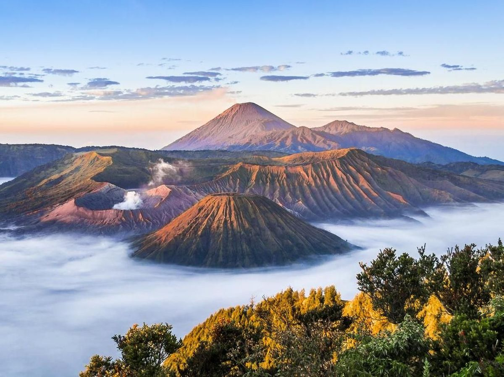
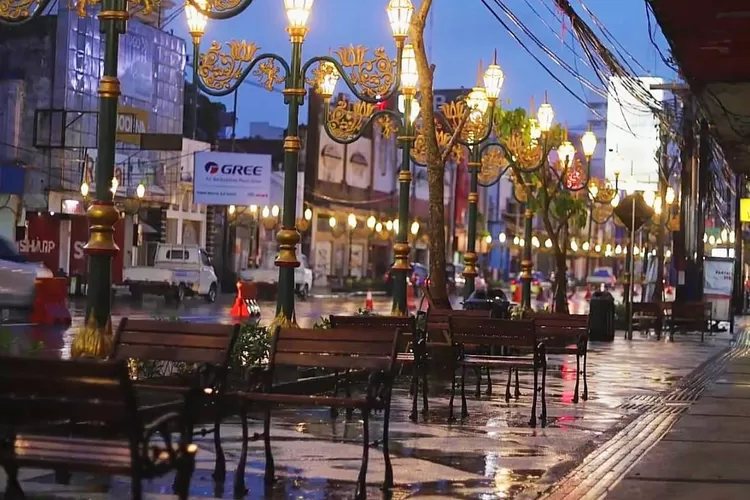
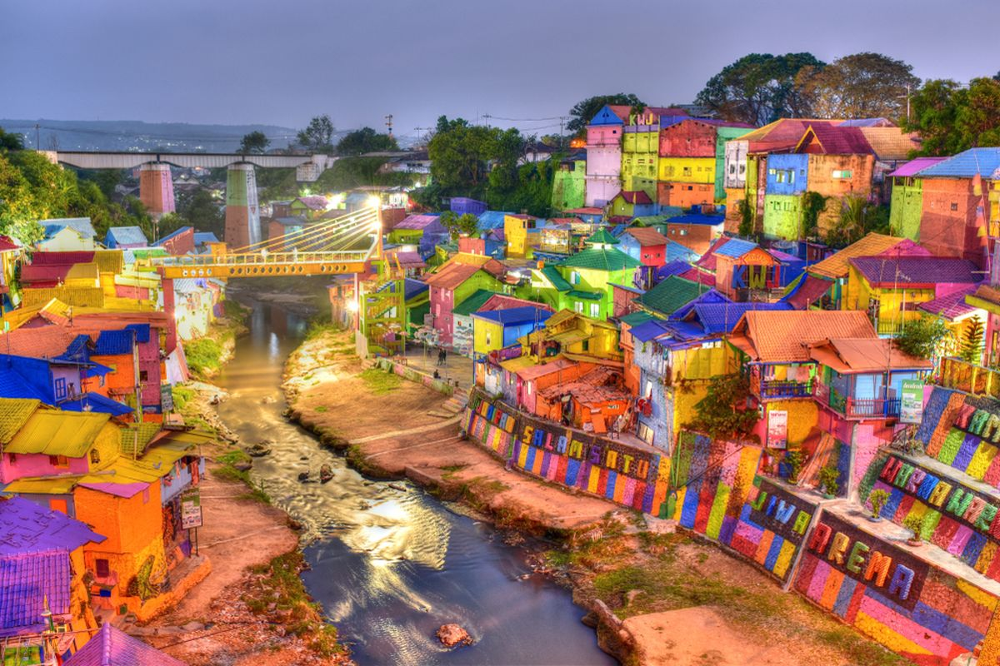
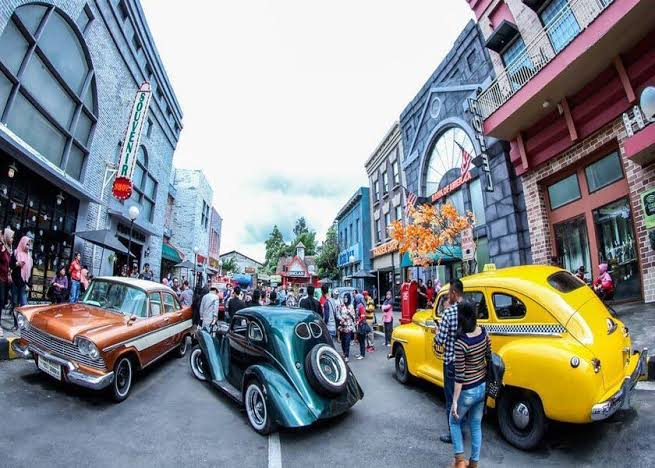
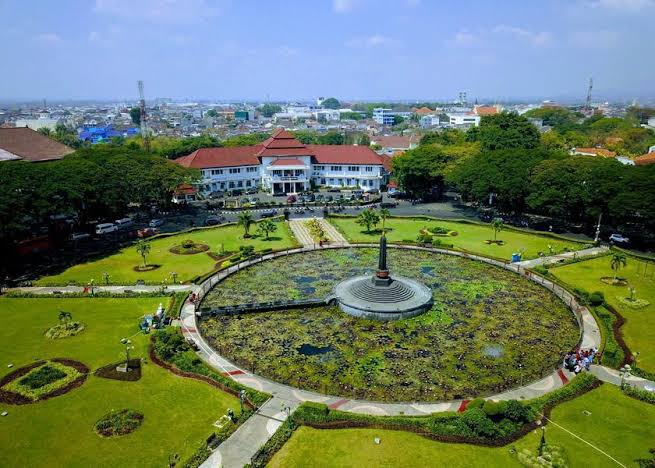
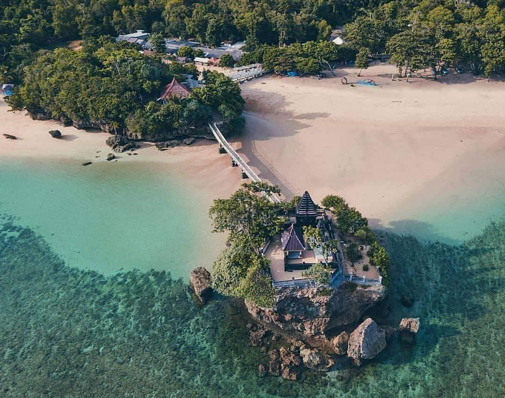

Mount Bromo
World-famous active volcano offering legendary sunrise views over a vast sea of sand.

Here are some cool places you should definitely check out when you are in Malang! I promise you won't regret going there!

World-famous active volcano offering legendary sunrise views over a vast sea of sand.

Aesthetic historic corridor lined with preserved Dutch colonial architecture and vibrant cafés.

A vibrant colorful village decorated with street murals and a famous glass bridge.

Massive interactive museum showcasing historical vehicles from all around the world.

An iconic circular park surrounded by a lotus pond, historic government buildings, and lush trees.

Beautiful southern beach featuring a sea temple built on an offshore island, often called the Tanah Lot of East Java.